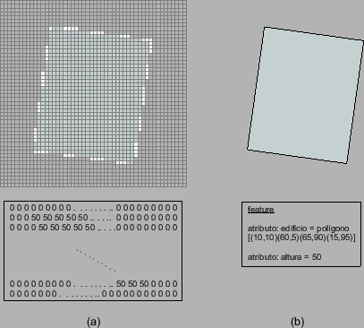

Siguiente: Java y GIS
Subir: Representación de datos en
Anterior: Raster
Índice General
Los datos del tipo vectorial utilizan geometrías para representar
los objetos del mundo real. Dichas geometrías son básicamente tres:
puntos, líneas (serie ordenada de puntos) y áreas o polígonos
(figuras delimitadas por líneas). La información espacial está dada
por las coordenadas de la geometría, es decir, la localización de
los diferentes elementos en el espacio. La información no espacial
se almacena como atributos de los diferentes objetos; por ejemplo,
un polígono que represente un área forestal, y uno de sus atributos
sea la descripción de las especies de árboles que lo componen. A
la composición de una geometría y sus atributos se le denomina
feature.
Cada uno de los dos modelos de datos tiene sus ventajas y
desventajas, y puede ser más adecuado uno u otro según la realidad
que se esté representando y el objetivo que se persiga. Por ejemplo,
los datos en formato del tipo raster permiten el almacenamiento de
datos continuos. Como desventaja podría mencionarse que requieren
mayor espacio de disco para su almacenamiento, ya que guardan un
valor por cada uno de los puntos del área a cubrir, a diferencia de
los vectoriales que sólo guardan la información necesaria, y son de
más rápido despliegue. En la figura 6.2 se muestra dos
posibles representaciones de un mismo edificio mediante cada uno de
los tipos de datos.
Figura 6.2:
Representación de un edificio de altura 50 mediante un
modelo de datos del tipo (a) raster (b)
vectorial
|

|
Siguiente: Java y GIS
Subir: Representación de datos en
Anterior: Raster
Índice General
SAPO